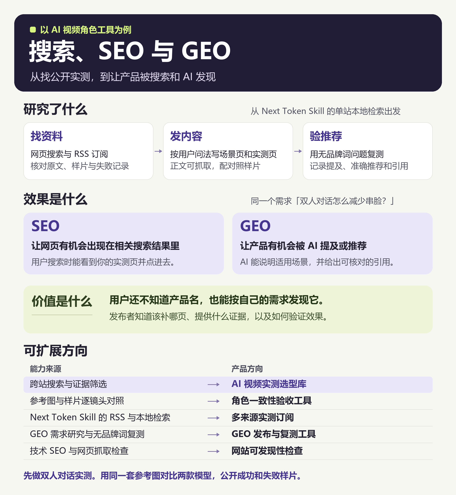

优先验证
AI 视频实测选型库
- 对应能力
- 跨站搜索和实测证据筛选
帮短剧创作者回答「双人对话容易串脸，我该用哪个工具？」用同一套参考图测试多个模型，公开成功和失败样片，记录生成几次才拿到一条可用镜头。
从 Next Token Skill 的播客检索出发
Next Token Skill 让我们看到，播客逐字稿可以按问题检索。我们用 AI 视频角色一致性做了一次跨站查证，练习从原文、样片和失败记录里判断什么值得引用。
把问题反过来，就得到 SEO 和 GEO 的价值。当用户只描述需求，还不知道产品名时，也有机会在搜索结果或 AI 回答里发现产品。这份指南记录怎么发布证据、怎么验证效果，以及能延伸出哪些产品。

每个方向都标出了它从哪项 Skill 或能力延伸。Next Token Skill 提供了固定来源同步和本地检索的基础，其他方向来自这次调研用到的搜索、实测和发布验证方法。
优先验证
帮短剧创作者回答「双人对话容易串脸，我该用哪个工具？」用同一套参考图测试多个模型，公开成功和失败样片，记录生成几次才拿到一条可用镜头。
有审片需求时延伸
帮短剧团队在一批镜头里找出变脸、换衣服、道具接不上的片段。第一版并排展示参考图和视频关键帧，由人标记问题时间点，再导出待重做清单。
把单站同步扩展到多位可信作者，再用网页搜索补充。每期筛出几条能改变工具选择的实测，附原文、样片和适用条件。
帮独立产品团队找出用户会问什么、AI 常引哪一页、自己还缺什么材料。第一版生成无品牌词测试题，给出一页值得补的实测或文档，再记录发布前后的回答。
帮网站发布者确认搜索引擎能否读到内容。输入网址，检查初始 HTML 正文、抓取规则、站内链接和站点地图，按影响排序给出修复项。
用一套自有角色图对比两个模型，公开全部结果和采用理由。有人反复回来查新场景，就继续扩充选型库。有人带自己的素材来判断哪些镜头要重做，就优先试做验收工具。
Feedly 已支持多源订阅和过滤，Artificial Analysis 已做视频模型盲测，Frame.io 已能逐帧批注。Peec 与 Webflow 也覆盖了 AI 引用追踪和内容缺口分析。可以先验证一个更具体的任务，例如同一套角色素材做某种镜头时，哪款成功率更高、哪些片段需要重做。
资料发现
订阅解决「熟悉的作者最近发了什么」，网页搜索解决「名单外是否有人真正做过这件事」。
原版查询的范围是「Next Token｜词元之外」官网。脚本读节目 RSS 和博客 RSS，抓取逐字稿，存到本地 SQLite，再按关键词和别名检索。Agent 负责归纳观点，链接来自原稿。部分时间戳是近似位置。
适合重复查询同一档节目里的发言人、期号、跨期观点和原话。可用 search 找段落、timeline 看前后观点、brief 汇集专题。其他博客需要接各自的 RSS、API 或网页读取方式。
这次角色一致性调研用内置网页搜索临时找资料，先按主题查，再打开作者原文。底层搜索引擎未显示。视频通常是顺着原文找到的 X、YouTube 或文章内播放器。
适合彼此补证，比如用同参考图评测看模型差异，用导演复盘看真实制作流程，用官方文档核对输入限制。
先查「AI 视频角色一致性」找到常用说法和工具，再把模型名、场景和证据词加进查询。优先打开作者博客、公开测评和官方文档，沿原文找到样片。
Seedance 2.5 vs Kling 4.0 character consistency creator test video identical reference即梦 Seedance 2.0 一致性 实测 角色 脸 失败 多镜头 B站 创作者Luma Ray3 Modify character reference preserves performance优先留交代输入、能对照输出、有失败细节的资料。重复转载回到首发。一次成功证明可行，多次尝试才有条件估算稳定性。厂商文档用来确认功能与限制，原始样片和作者记录用来判断效果。
输入素材和输出样片分别标明。这里汇集公开案例与作者记录，作为选型线索和测试设计参考。
跨场景短剧 · 制作复盘
《CATACOMBES》用正面、侧面、背面与特写建立角色参考。角色受伤后，导演先更新参考图，再用各镜头首帧生视频，最后筛选剪辑。适合跨地点、跨集反复使用同一角色。
成片展示整套流程可用于长片，成片包含多次生成和人工选片。
多人对话 · 同输入对照
秋吉雅史把上部短剧的三位角色和新剧本给可灵 4.0 与 Seedance 2.5，各生成一次 30 秒办公室段落。作者记录中两款都保住了三人身份，仍出现重复台词、读错名字或多切镜头。
适合初测多人对话。脸、台词归属和分镜需要分别核对。
单图参考 · 场景相关结果
ZOOOP 给两个模型同一张虚构头像做雨夜转头，可灵末帧更接近原脸。另一组公交、办公室、住宅的对照里，两款都让角色保持可辨认，Seedance 的场景表现更自然。
两组任务不同，各自只有单次样本；第二组是 OpenArt 赞助测试。
保留动作 · 视频到视频
Oliver Korzen 用自己出镜的片段测试 Luma Ray3 Modify，把外形换成绿巨人，原动作和节奏仍可辨认。这里有输入视频，适合已经拍好表演、还要调整外形的情况。
这个版本的官方 FAQ 给出的单段上限是 10 秒。
先选最难的三个镜头，例如近景、侧身回头、换光后的双人同框。用相同参考素材和设置，在候选模型上各跑三次，记录脸、服装、台词归属和道具连续性。优先比较有几条能剪进成片，再比较生成和返工成本。
试用前确认素材入口。 BytePlus 文档列明 Seedance 2.0 与 2.5 对直接上传真人脸的限制。不同入口按其公开规则核对。查看 BytePlus 文档
GEO 与搜索算法
GEO 是生成式引擎优化。目标是当 AI 回答一个与你相关的问题时，你的内容有机会被引用，或你的产品有机会成为它给出的选项。
搜产品名的人想找官网和入口，搜具体问题的人想找做法和样片。SEO 帮这些网页出现在相关搜索结果里，让人点进来查看。
用户只问「双人对话怎么减少串脸」。如果 AI 找到你的实测，能说清工具适合谁、有哪些限制并给出原文，你的产品就有机会进入用户的候选名单。
发布与推广
先研究用户会怎么问，看看已有结果缺什么。把你能证明的答案发布到用户常去的平台，再用同一批问题复测。
从用户原话、搜索联想或 Search Console 找候选词。实际查「双人对话怎么避免串脸」，看结果给了怎样的素材、方法和证据。已经有案例时，可以反推它能回答哪个真实问题。
场景页说清适用人群、预期效果与试用入口。实测页记录参考图、日期、模型版本、生成总数、可用数量、失败镜头和限制。
正文、关键结论和素材说明直接进 HTML。用稳定网址、站内链接和站点地图。内容相对固定可用 SSG，按请求生成的公开内容可考虑 SSR。视频播放器和 3D 交互可以单独加载。
先找目标用户最常用的入口。早期选一个渠道做完整的对照内容，观察用户从看到案例到试用的路径。付费测试按有效试用、线索或付费成本评估。
场景页示例
把两位角色的参考图、双人同框结果和失败镜头放在一页。让读者能够用示例素材试一遍，并知道要核对脸、衣服、谁在说话和动作是否接得上。
/use-cases/consistent-character/tests/character-consistency发布前记基线。每题在每个平台开独立会话跑三次。固定语言、地区和联网模式，保留日期、完整回答与引用链接。
记分示例 · 18 次中提及 4 次，准确推荐 2 次，分别记 4/18 和 2/18。
站长报告看展示和引用。推广链接加 UTM，查看到站、试用、第一次成功导出和付费。人工复测用来核对实际推荐内容。
来源与工具
按用途找原文、订阅入口、样片和官方文档。
没有匹配来源。可以换个关键词或选择「全部」。
播客本地检索实现和用法。节目 RSS 发现更新，博客 RSS 抓取文章。
通过 Note 作者主页的菜单取 RSS。This Week in AI 提供公开 feed。
同提示、同参考图的一次生成对照。第 3 节是三人办公室短剧，第 5 节是动作参考。
文章第 2 轮有同一参考头像、两段输出和末帧对比。
公开提示词和各模型单次结果，双人对话与动作迁移可以直接对照。
公交、办公室和住宅三场景对照。来源为创作者视频与 JQ Visions 复盘。
完整短片、角色设定图和逐镜头首帧方法。
用已有视频替换人物外形，同时保留可辨认的原动作节奏。
用于核对输入方式和产品入口限制。
了解发现、索引、排序与 AI 答案如何找支持来源。
核对 HTML、SSR 与静态生成、站点地图和 OAI-SearchBot。
将场景、使用证据和可信作者信息写清楚，再选择分发平台。
看网页是否收录、实际查询有哪些，以及 AI 搜索展示了哪些页面。
用临时聊天减少个性化影响，用站长报告和来源标记补充观察。